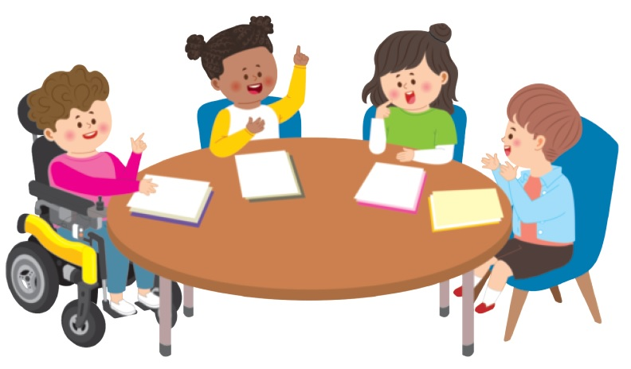

-
-
①‘도덕’을 생각하면
떠오르는 것 -
②도덕적인 것
구별하기 -
③도덕적 가치
알아보기 -
④도덕이 무엇인지
설명하기
-
도덕과 관련이 있는 낱말, 문장, 인물, 사례 등을 자유롭게 떠올려 봅니다.
친구와 이야기를 나누고 공통점을 찾아봅니다.
-
도덕적인 것과 도덕적이지 않은 것에는 무엇이 있는지 생각해 봅니다.
도덕적인 것의 특징을 찾아봅니다.
-
‘도덕 가치 카드’를 살펴보고 도덕적 가치에는 무엇이 있는지 알아봅니다.
(붙임 자료② 참고) -
도덕이 무엇인지 나만의 방법으로 설명해 봅니다.

-
①‘도덕’을 생각하면